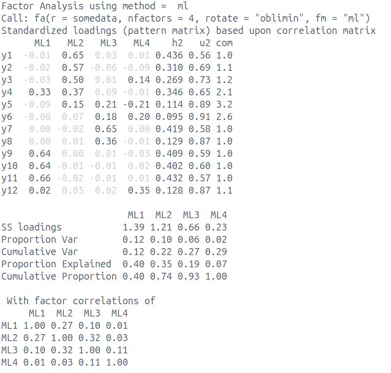

Below are the results of a data reduction of a set of 12 items assessing environmental conscientiousness. Participants are asked to respond to each statement on a 5-point likert scale from “Strongly Disagree” to “Strongly Agree”.
Based on the results and the item descriptions below, provide an interpretation of the factor solution. Your description should include:
Describe the factor model that has been fitted [2 marks]
Describe the numerical solution of the fitted model [4 marks]
Discuss the suitability of the selected number of factors [4 marks]
Suggest and justify possible next steps [2 marks]
Label and define the factors [3 marks]

item
wording
y1
I recycle regularly
y2
I use eco-friendly transportation
y3
I buy sustainable products
y4
I know how to reduce my carbon footprint
y5
Protecting resources matters to me
y6
I care about protecting the environment
item
wording
y7
I feel responsible for my environmental impact
y8
I am worried about climate change effects
y9
I know about the harm of single-use plastics
y10
I know how deforestation affects climate change
y11
I know about relevant environmental policies
y12
Wildlife destruction concerns me deeply
Solution 1.
Important
This is not a “rubric”, in the sense that a) it is not an exhaustive list of possible things that could be mentioned and b) the bullet points below are not mapped to “marks”
Describe the factor model that has been fitted
12 items, 4 factors extracted
oblique rotation allowing factors to correlate
estimated with maximum likelihood
Describe the numerical solution of the fitted model
explains 29% variance
Factors ML2 & ML1 both have \(\geq 3\) salient/primary loadings
(salient = \(\geq |0.3|\))
3 complex items (y4, y5, y6)
some items (y5,y6) have no salient loadings
Factors ML1,2,3 correlated weak-moderate
Factor ML4 not strongly correlated with others
Discuss the suitability of the selected number of factors
probably overextracting (too many factors)
because = lack of clarity/definition of ML3 & 4
both have only 1 item with salient loading
3rd factor explaining only 6%, 4th factor only 2%
SSloadings for ML3 & ML4 are <1
complex items y5 & y6 are spread across ML3 & ML4 - a 3 factor solution may well make more sense
Suggest and justify possible next steps
examine a 3 factor solution
item y4 = one to keep an eye on and possibly remove if still complex
once satisfactory solution obtained, collect data on new sample and test if model replicates
Label and define the factors
ML1 = “environmental knowledge”
ML2 = “environmental behaviours”
ML3/4 not well defined enough to name
combined ML3/4 look like might become “environmental concern”.
Q2 - SSloadings [6 marks]
Calculate the 6 values missing from the table below: SSloadings [2 marks] and proportion variance [2 marks] & cumulative variance [2 marks].
divide SSloadings by 5 (because 5 observed variables) to get proportion variance
PC1 PC2
0.715 0.183
those two numbers are then cumulatively summed for cumulative variance:
PC1 PC2
0.715 0.898
Q3 - MLM [10 marks]
A company that makes “6-minute journals” is undertaking some research to showcase the effectiveness of their product in helping to alleviate unwanted feelings. They recruited 166 people signing up to one of 10 “anger management classes” in different cities, and asked them if they would like to have a free journal to help with reflection. 88 participants chose to take a journal, and 78 did not. Each participant filled out weekly assessments of anger levels for 10 weeks. Scores on the anger measure can range from 0 to 15, with changes of 3 being considered ‘clinically meaningful’.
To investigate if having a journal helps to reduce anger levels, the company fit a multilevel model to the data, with anger levels being modelled by week number (0 to 9, with 0 representing the first week participants filled in the anger assessment), whether the journal was used (“no”/“yes”, with “no” as the reference level).
Interpret the fixed effects [4 marks]
Interpret the random effects [4 marks]
Discuss the relevance of the findings, considering the context of the study design and researchers’ aims [2 marks]
Solution 3.
Important
This is not a “rubric”, in the sense that a) it is not an exhaustive list of possible things that could be mentioned and b) the bullet points below are not mapped to “marks”
Interpret the fixed effects
anger for someone who doesn’t journal, at start (in “week 1”, or “week 0” is fine here, give benefit of doubt) is 10.22
no significant change over the study period for those who don’t journal - 1 week is associated with a non-sig 0.06 change in anger
people who take the journal have significantly lower anger at the start by -0.3
change in anger for every week is significantly different for the journal group compared to the no-journal group. the weekly change is -0.24 lower for the journal group than the no-journal group
estimated weekly change for the journal group is \(0.06+-0.24=-0.18\)
Interpret the random effects
both participants and classes vary in starting anger levels and in change in anger over study period
participants vary (both intercept and slopes of change) much more than classes
high level of ppt variability relative to fixed slope.
we’d expect some ppts (even in the journal group) to increase in anger
ppts who start more angry decrease less (positive correlation intercepts and slopes)
initial levels of anger for classes is not related to class changes in anger
Discuss the relevance of the findings, considering the context of the study design and researchers’ aims
people who take journal significant reduction in anger compared to people who don’t take it
effect is small - weekly change of ~.2
But over 10 weeks they only go down by -1.8. still not clinically meaningful, but if change continues linearly beyond the study period, then this would translate to meaningful change after ~15 weeks
difference in two groups at outset suggests two groups are not comparable
self-selecting journal - maybe all we’re doing is splitting up people who do/don’t want to change
Q4 - hierarchical data structures [3 marks]
Provide example levels for each of the three types of study: Cross-Sectional, Repeated Measures, Longitudinal [3 marks]
level
cross-sectional
repeated measures
longitudinal
2
…
…
…
1
…
…
…
Solution 4. anything that makes sense here, more common ones are: